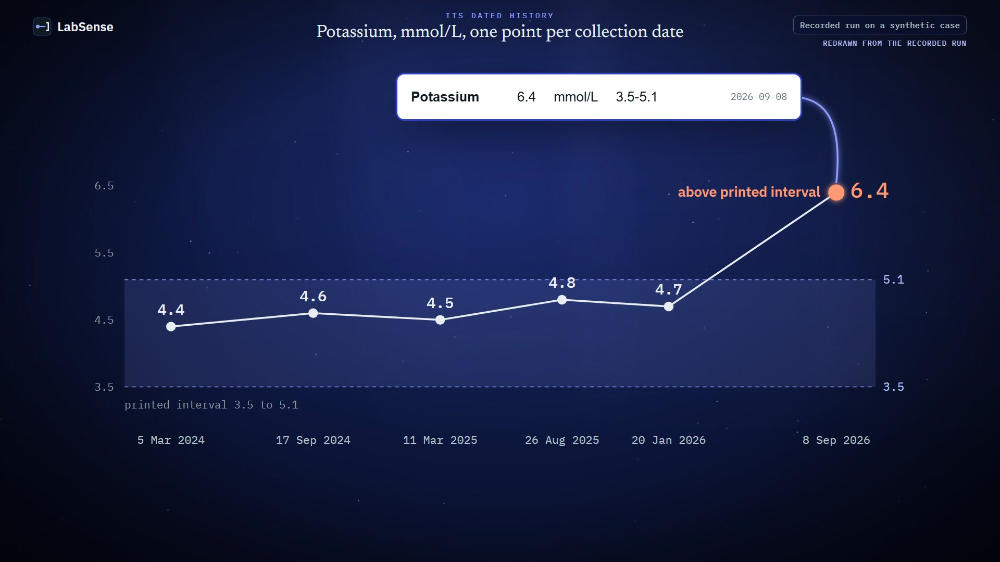

Evidence and status, 9 November 2026
What has been tested, on what, and what is still in development.
LabSense is a Clinical Investigational System (CIS) for clinical decision support (CDS), in active development. This site shows a recorded run of the features tested so far; further features are being validated. It works under physician oversight and does not diagnose. The full chain is tested on synthetic cases written for testing, and value extraction has also been compared on one de-identified real case, where the full chain is being prepared; none of it is clinical validation.
- Recorded output of a test run on a synthetic case
- Evaluated in a measured test
- Live in the workspace on the local system, not online
- Being validated built in part, checks under way
- In development not shown, work under way
- Planned scheduled; work has not started
Feature status
| Capability | Status | Basis |
|---|---|---|
| Reading printed rows with their unit, printed interval and collection date | Recorded | SYN30MP1; an earlier reading test on 46 synthetic PDFs |
| Identity check on the first report; later reports for another patient ID refused before storage | Recorded | SYN30MP1 (confirmation); synthetic cases C13 and C24 (refusal) |
| Stored record with every printed row stored or named with a reason | Recorded | SYN30MP1: 109 printed rows, 107 stored, 2 named |
| Reading every panel of the current report (multi-panel reading), the evaluator default | Recorded | SYN30MP1 and its repeat on the integrated build, 9 Nov 2026 |
| A critical value on the current report driving the finding and urgency | Recorded | SYN30MP1: “Critical Potassium (6.4 mmol/L)”, Emergency, in both stages, after reload and in both exports |
| History per test, against the printed interval, units kept apart | Recorded | SYN30MP1 |
| Targeted questions, scripted answers, receipts of what changed and what did not, each answer attributed to the signed-in account | Recorded | SYN30MP1 |
| Reopening the original report from a new browser | Recorded | SYN30MP1: all nine opened as whole PDFs; byte-for-byte match shown in an earlier run |
| Source verification of each stored value against its printed row, with checksums | Being validated | Not shown on this site; every stored value is tied to its printed row and report |
| Clicking a value to highlight its row on the printed page | In development | Not shown; a report opens as the whole document |
| Review snapshot export of the first reading and the reassessment | Recorded | SYN30MP1: 30 files each, primary concern equal to the screen |
| AI model reading first, deterministic reader as a dissent-only check | Planned | Built and switched off; no live model run on SYN30 |
| AI wording of questions; AI reassessment or final analysis | Planned | Wording hook off; reassessment and analysis are deterministic and have no AI component |
| Supervised sessions on synthetic cases, on one local machine | Live in the workspace | Behind a sign-in; not online |
| Remote use | Planned | Not permitted until a lifetime for backend credentials is built |
SYN30 run record
Recorded run SYN30MP1 and its repeat, 9 November 2026
SYN30 is one synthetic patient at a fictional laboratory. The case was written before the files were generated. The run went from sign-in and upload to export and a rebuild in a new browser, on one local machine, with the deterministic reader only and no AI model call. A repeat run, SYN30MP2, gave identical results.
- 2024-03-051 report, 4 pagesFirst report; whose report it is confirmed here
- 2024-09-171 report, 3 pagesRoutine follow-up
- 2025-03-112 reports, 8 pagesOriginal, and a reprint (4 pages) counted once
- 2025-08-262 reports, 6 pagesOriginal, and an amended copy (3 pages) with a changed creatinine range
- 2026-01-201 report, 3 pagesCreatinine in µmol/L; some results printed as limits
- 2026-05-141 report, 2 pagesReport date only, no collection date
- 2026-09-081 report, 4 pagesLatest: potassium 6.4 mmol/L, creatinine printed twice
Where the 109 printed rows went
| Rows | What happened to them |
|---|---|
| 107 | Stored. Four of them are limits kept exactly as printed (for example TSH <0.01), not turned into numbers. |
| 2 | Not stored, each named with its reason: a second creatinine on the latest report (1.62 mg/dL; neither value chosen) and a white cell count hidden by a covered cell. |
| 8 | Stored but kept out of every trend: total cholesterol on six report copies, creatinine 80 µmol/L (a different unit) and creatinine 1.04 mg/dL (held for review). |
What the run did, step by step
| Step | What happened |
|---|---|
| Upload and reading | All nine reports read and confirmed, uploaded out of date order. |
| Identity | A person confirmed the first report; the other eight matched it. |
| Stored record | Rebuilt in a new browser: 107 stored rows and 2 named rows, for 17 tests. |
| First reading | Led by “Critical Potassium (6.4 mmol/L)”, urgency Emergency, evidence support Moderate. |
| Questions and answers | Three questions; scripted answers No, No, Yes from a signed-in synthetic account. |
| Reassessment | The Yes changed familial dyslipidaemia to “inherited/atherogenic risk raised”; the finding and urgency did not change, and the screen said so. |
| Reload and originals | Results unchanged after a reload; all nine originals reopened as whole PDFs in a new browser. |
| Exports | A snapshot of each reading, 30 files each, with the same primary concern as the screen. |
| Access | Reads that skipped the sign-in gateway were refused; reads by another role were refused or returned nothing. |
Technical details
Counting: the record screen’s heading reads “103 stored values” because it counts numbers only; the 4 printed limits (eGFR >90, TSH <0.01, urine albumin/creatinine ratio <3, ferritin <5, all on the report of 2026-01-20) are stored as text and listed under it, and the run’s retrieval check counts 107 stored rows. 107 stored plus 2 named equals the 109 result rows printed on the nine PDFs, with the reprint and the amended report counted as printed. The first reading read 13 of the 19 value-bearing lines of the latest report, as the app counts lines; that report prints 15 result rows.
Configuration: every panel of each report read (multi-panel reading), the configuration used for evaluator sessions.
Timings on the server: reading 6 to 15 s per report; record read at most 264 ms; consult median 375 ms, slowest 766 ms; reopening 47 to 125 ms per document; 2.8 s per export. Driver step times include fixed waits and other work ran on the same machine, so these are upper bounds.
Builds: backend integ/sb22-security c0c5e123 (later commits to 954e7a32 change AI cost handling only), frontend aa06e68 (configuration 884766d makes multi-panel reading the default in the controlled evaluator build), gateway bd866d28.
Repeatability (SYN30MP2 against SYN30MP1): screens, stored record, questions and answers identical, and exports identical once times and IDs are removed.
Earlier tests
- In an earlier reading test on 46 synthetic PDFs across 15 cases (late October 2026), the conventional reader read every printed value line into a stored row, 243 lines in all; the one file with no rows was a report printed for another patient, refused by design. Evaluated
- Reports printed for another patient were refused before storage in browser test runs of synthetic cases C13 and C24. Recorded
- Beyond the synthetic cases, value extraction has also been compared on one de-identified real multi-year case: the AI reader against the conventional reader, 251 observations, checked against a frozen reference set (August 2026). This covers extraction only; the full question-and-export chain on real reports is being prepared. Evaluated
- In an earlier recorded run (8 November 2026), a new browser reopened all nine originals and each matched the printed PDF byte for byte (SHA-256 compared). Recorded
Why LabSense
Reading a report is common. Keeping a whole history honest is the work.
The mechanisms below are shown today on synthetic cases, each with how it works. The advantages listed after them do not exist yet: they would need use, data and clinical review.
One history per test
Reports from different dates and panels become one dated series per test.
Mechanism: printed name, unit, the laboratory’s own interval, collection date and file kept per value; series join only the same test in the same unit.
RecordedHolds back instead of guessing
A value it cannot trust is kept out, with the reason on screen.
Mechanism: unit mismatch refused; printed limits kept as limits; two values on one report, neither chosen; a blank cell named.
RecordedChecks whose report it is
A person confirms identity once; reports printed for another patient ID are refused before storage.
Mechanism: the confirmed printed ID becomes the record’s anchor (shown in earlier synthetic cases).
RecordedSays what it did not assess
The assessment lists the results it did not read, so a gap is visible instead of silent.
Mechanism: coverage computed against the stored record for the report’s date.
RecordedA receipt for every answer
After an answer, the screen states what changed and what did not.
Mechanism: answers applied to named elements only; unchanged fields are stated, not implied.
RecordedThe original stays the original
Every report reopens exactly as printed, and each stage of an encounter exports as a snapshot that names the build it came from.
Mechanism: retained source files compared by SHA-256; a replay manifest names the build.
Recorded
In development and planned
- Source verification of each stored value against its printed row Being validated
- Clicking a value to highlight its row on the printed page In development
- A multi-centre library of laboratory report formats, each checked row by row In development
- A disagreement calibration database: reader disagreements and how clinicians resolved them In development
- Laboratory quality reports on missing intervals and duplicates In development
- Hospital record integration (FHIR) and other evidence sources Planned
Built, switched off, not yet run live
An AI model reading first, with the deterministic reader as an independent check that can only raise a disagreement. The path exists in the code and is off by default; a first live run on synthetic cases is planned within its cost limits.
Reading one report at a time, and LabSense across a patient’s reports
| What is checked | Reading one report at a time | LabSense across a patient’s reports |
|---|---|---|
| Printed rows | The reviewer reads each report on its own and keeps track of which rows were read. | Every printed row is counted, and either stored or named with the reason it was not stored (SYN30MP1: 109 rows, 107 stored, 2 named). |
| Doubtful values | When a report prints two values for one test, or an unexpected unit, the reviewer decides which to use. | A value it cannot trust is held back with the reason, instead of one being chosen. |
| Whose report it is | The reviewer checks the name and ID printed on each report. | The patient identity is checked before anything is stored; a later report printed for another ID is refused. |
| Answers | What a patient’s answer changed lives in the reviewer’s own notes. | A receipt states what each answer changed and what it did not. |
The designed reading path has an AI model read first, with a deterministic validator that can only raise a disagreement; the recorded SYN30 run used the deterministic reader alone.
Where others are ahead: laboratory networks, distribution, regulatory status, clinicians in the loop and integrations (see Comparison with other products).
Product film
The recorded run SYN30MP1, narrated, in 2 min 55 s.
A narrated recording of the multi-panel run SYN30MP1 on synthetic case SYN30: the printed potassium row and its history, the identity check, the stored record, the first reading led by “Critical Potassium (6.4 mmol/L)”, the three questions with their scripted answers, the originals reopened and the exports. Scenes are redrawn from the recorded run, with short zoomed inserts of the recorded screens; offline synthetic voice, captions on by default. It closes: “This was a recorded run of LabSense, a Clinical Investigational System in active development, on a synthetic case.”

Transcript follows the film; select a line to jump to it
- 0:01 A recorded run on a synthetic case: the patient, the laboratory and all nine reports are fictional.
- 0:08 On the latest report, collected 8 September 2026, potassium is printed as 6.4 mmol/L.
- 0:15 Printed interval: 3.5 to 5.1.
- 0:19 On the five earlier collection dates, from March 2024, it was 4.4 to 4.8, inside the interval.
- 0:26 Then 6.4, above it.
- 0:28 A test driver uploaded nine synthetic reports, 30 pages, out of date order.
- 0:33 Each value is placed by the date printed on its report, not by upload order.
- 0:38 The first report asks whose report it is.
- 0:41 The run confirmed the printed patient ID, and the other eight reports matched it.
- 0:46 Rebuilt in a new browser from the server, the record lists 103 stored values from 9 reports,
- 0:52 each with its date, printed interval and file.
- 0:55 Creatinine printed as 80 µmol/L was refused and kept out of the mg/dL series.
- 1:01 History draws one potassium series across six collection dates, from 4.4 in March 2024 to 6.4 in September 2026.
- 1:10 The first reading leads with Critical Potassium (6.4 mmol/L), at urgency Emergency.
- 1:15 Evidence support: Moderate.
- 1:18 It states its coverage: 13 of 19 value-bearing lines read.
- 1:21 "Not evaluated does not mean normal."
- 1:24 Two rows were not stored, and are named: a second creatinine, 1.62, and an unreadable white cell count.
- 1:31 Creatinine is printed twice, so 1.04 is held for review and neither value is chosen.
- 1:38 It issued three questions: on potassium 6.4, on HbA1c 6.8, and on family history.
- 1:46 The answers are scripted: No, No and Yes, set before the run and clicked by a synthetic evaluator account.
- 1:53 The two No answers were recorded and changed nothing; no rule in this version uses them.
- 1:58 The Yes changed familial dyslipidaemia from "sporadic assumed" to "inherited/atherogenic risk raised".
- 2:04 Confidence and urgency are stated as unchanged.
- 2:08 After the answers, the finding is still Critical Potassium, at Emergency.
- 2:13 In the new browser, all nine original reports reopened as whole PDFs.
- 2:17 Linking each value to its place on the page is being validated.
- 2:21 Both readings were exported as review snapshots, primary concern Critical Potassium, as on screen.
- 2:27 Because the creatinine conflict is unresolved, each export is marked not for clinical use.
- 2:33 A new browser downloaded the recorded snapshots again, unchanged.
- 2:37 This was a recorded run of LabSense, a Clinical Investigational System in active development, on a synthetic case.
- 2:43 Further features are being validated and are not shown here.
- 2:46 No AI model was called in this run.
- 2:48 LabSense has not been clinically validated.
AI, security and clinical status
AI
The SYN30 runs used the deterministic reader only, with no model call. The intended design for reading is an AI model first, with the deterministic reader as an independent check that can only raise a disagreement; that path is built, switched off by default and not yet run with a live model on SYN30. Question choice, answer handling and the final analysis are deterministic in this build; the optional AI wording of questions is switched off.
Security and access
LabSense runs on one machine, bound to the local network interface only, behind a sign-in gateway. Requests that bypass the gateway are refused, cross-case and cross-role reads are refused, and signed-out uploads are refused; these were checked in the SYN30 run and in the gateway test suites. Remote use, even with synthetic reports, is not permitted until a lifetime for backend credentials is built. Real reports are not accepted.
Clinical
A licensed clinician who heads the LabSense clinical governance panel co-signed a limited set of rules on 29 September 2026, for example that where a laboratory panel lacks a ratified definition, individual rows may be shown but no overall panel normality may be asserted. That is approval of specific rules. No clinician has reviewed the outputs shown on this website, nor the general test descriptions on the results cards.
Comparison with other products
A reading of the public material of seven products on 29 October 2026 (consumer testing services, report explainers, a clinical literature assistant and a record-exchange network). It is not a tested comparison; their figures are their own claims and were not checked. We did not find the behaviours shown here described in that material; that is an absence of evidence, not proof that the products lack them.
- Clinical validation: scheduled for this quarter (by December 2026)
- Real-patient use: none; one de-identified real case used for an extraction comparison
- Regulatory clearance: none
- Pilot: none agreed
- Users or customers: none yet
- Head-to-head comparison: not run
Files and checksums
The nine synthetic reports of SYN30, byte-identical to the files the run uploaded. Anyone can compare a reopened report with these checksums.
| Report | SHA-256 |
|---|---|
| 2024-03-05 | 40694b26a7a51df95d39ade1abdf701ef10bb7472f7739ab2d065cbfe7eacf41 |
| 2024-09-17 | da7b120a1f944f551f323016ff296f89ec4880086ca0895aa3ccf064c5e72ee0 |
| 2025-03-11 | bdaea3465b2a0baab9d412a6c1a5f43bf45c4060cbe6cc36516a434af3ad4fe2 |
| 2025-03-11 reprint | 0c54d62e4e66b04e68ec1d486a3cd1df22321f89a5737d9e8f80d58dc3f6ea59 |
| 2025-08-26 | db99e7e53313a9d9f29d92093f5c812408d5c37fc684f05d74018cc3b731dd2c |
| 2025-08-26 amended | da5e333b25e0bc456840e68f614b23ed64bd2aab11446652a2bc200c8569ac01 |
| 2026-01-20 | 3d4ccf3a228fc24b21a46e6ce11e048aac058f7f6680f4df1fd52aa38bcb68ff |
| 2026-05-14 | 507e0207d77c7dbb946ba2fbefd34fb991015153be6e3e144480b4707b35c2f4 |
| 2026-09-08 | d93d0b409303bee94a572e4926059ce51843ec02d09e85ce841621d4af16cec6 |
Full screen captures from SYN30MP1 (1440 px)
- Review screen
- First reading
- Reassessment
- History
- Results not assessed
- Record in a new browser
- Originals reopened


The exports themselves are not published: they contain local machine paths from the test computer.